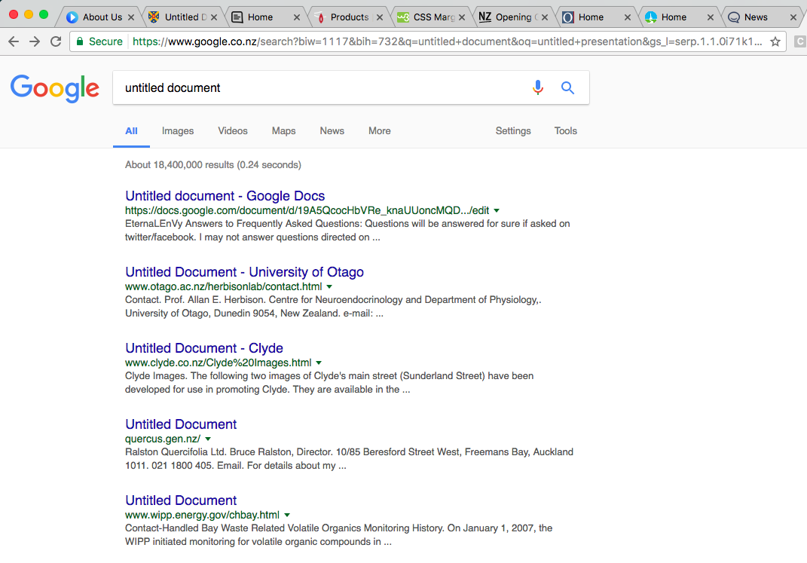

Practicing accessibility
Katherine Barcham
Department of Internal Affairs
Who I'm thinking about?
 Microsoft Inclusive Design Kit, CC-BY-ND-ND
Microsoft Inclusive Design Kit, CC-BY-ND-ND
Disclaimer: I'm not a magician

When seeing is an issue
 Microsoft Inclusive Design Kit, CC-BY-ND-ND
Microsoft Inclusive Design Kit, CC-BY-ND-ND
Text alternatives for images
Anything you say with an image, also say with text.
Who it affects
- People who can't see images:
- vision disability
- bad internet connection
- old browser
- limited data
- Search engines (Google)
Decorative or background images
 m.maddo, CC BY-SA 2.0
m.maddo, CC BY-SA 2.0
Meaningful images
 m.maddo, CC BY-SA 2.0
m.maddo, CC BY-SA 2.0
Text in images
 m.maddo, CC BY-SA 2.0
m.maddo, CC BY-SA 2.0
Linked images
 m.maddo, CC BY-SA 2.0
m.maddo, CC BY-SA 2.0
Example time
The colour of text and images need to have enough contrast with their background to be easily read.
Who it affects
Bad colour contrast affects more people that you'd think, including:
- People with low vision
- People in bright sun
- People who’ve turned the brightness on their phone down to save their battery
- People with colour vision deficiencies
- Anyone looking through an old projector
- Anyone over the age of 40.
Use of colour

Colour shouldn't be the only way that you communicate information.
Who it affects
Not everyone sees colours in the same way. Think about:
- People with colourblindness (especially older people)
- Screen readers
- Same as contrast:
- people in bright sun
- people on a screen with low contrast
- people watching a presentation on an old projector
- People who can't read your mind.
How to test it
- Print your page in black and white.
- Use a colourblindness simulation tool like Colour Oracle, or an online tool like Coblis.
Example time

When hearing is an issue
 Microsoft Inclusive Design Kit, CC-BY-ND-ND
Microsoft Inclusive Design Kit, CC-BY-ND-ND

Captions and transcripts
Videos need captions.
Videos and audio need descriptive text transcripts.
Who it affects
Videos are great for telling people things quickly but people can’t always hear the audio track, including:
- People who can’t hear for any reason
- People without headphones:
- in a noisy place
- in a quiet place.
- People who might be listening to transcripts because:
- they can’t see the video
- they’re looking at something else — like the dishes.
- Google and other search engines.
Example time
 https://www.youtube.com/watch?v=EBCmOXmmnMI
https://www.youtube.com/watch?v=EBCmOXmmnMI
Barriers for everyone
 Microsoft Inclusive Design Kit, CC-BY-ND-ND
Microsoft Inclusive Design Kit, CC-BY-ND-ND
Doing text right

Titles, headings and links should be marked up with the correct HTML.
Who it affects
Page titles, link context and headings affect:
- Everyone, especially anyone:
- using assistive technology like screen readers or voice recognition
- trying to skim the site or find information quickly
- trying to navigate through the site quickly
- who has changed their browser style sheets or display preferences
- Google and other search engines.
Page titles
Link context


Headings
Example time
VoiceOver demonstration - Home equity release loans - before
When using your hands is an issue
Using a keyboard
You should be able to do everything with a keyboard that you can do with a mouse.
Who it affects
Not everyone can use a mouse to interact with your site:
- People who are using other parts of their body to get around the website
- People who are blind and using a screen reader
- People who have trouble holding or using a mouse because they might have:
- Arthritis
- Repetitive Strain Injury
- a cast on their arm, or
- Parkinsons.
- People with a broken mouse or trackpad.